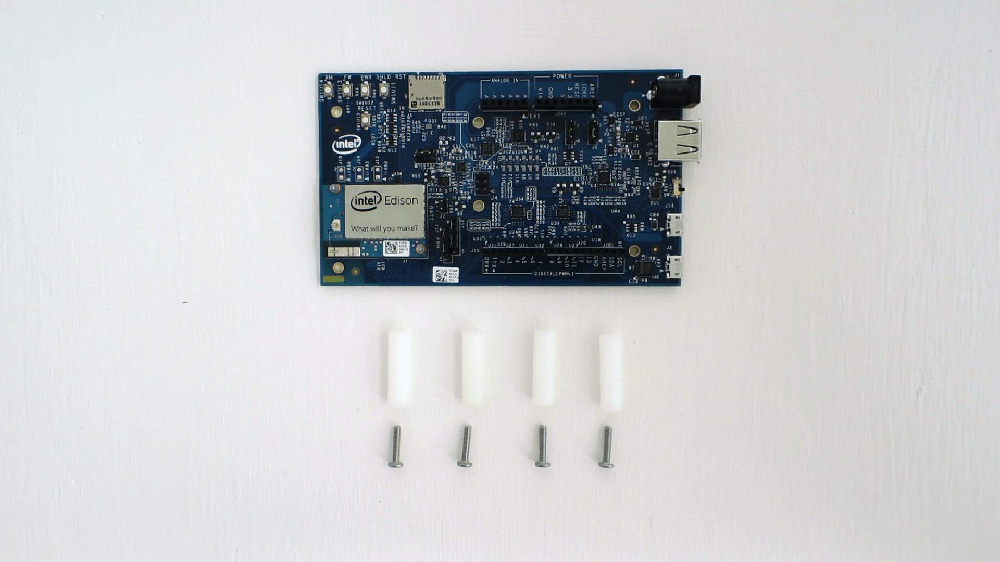

-
Locate the four metal screws and four plastic spacers in the Intel® Edison Kit for Arduino box.

-
In one of the four holes in the corner of the Arduino expansion board, insert a screw through the top.

-
Twist and tighten one of the white plastic spacers onto the screw. The spacer should be on the bottom of the expansion board to act as legs.

-
Repeat for the remaining three screws and spacers.
Done!
Your Arduino expansion board should look like the photo below when the plastic spacer legs are attached.